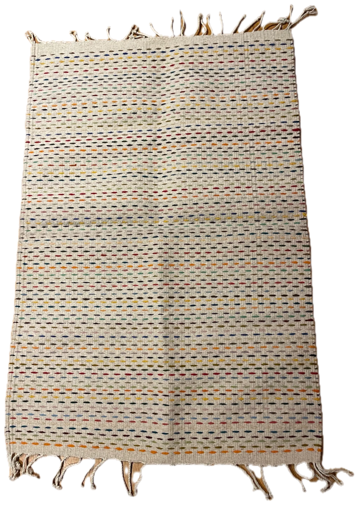
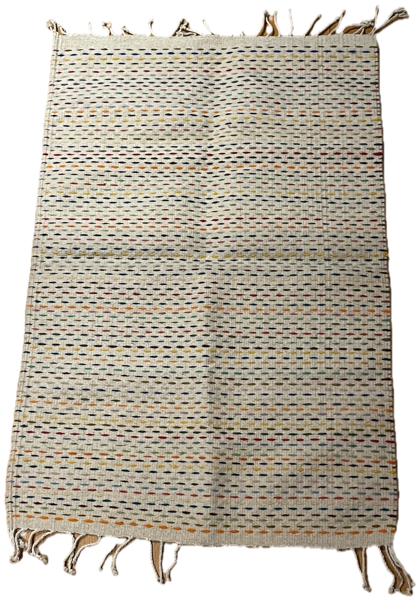
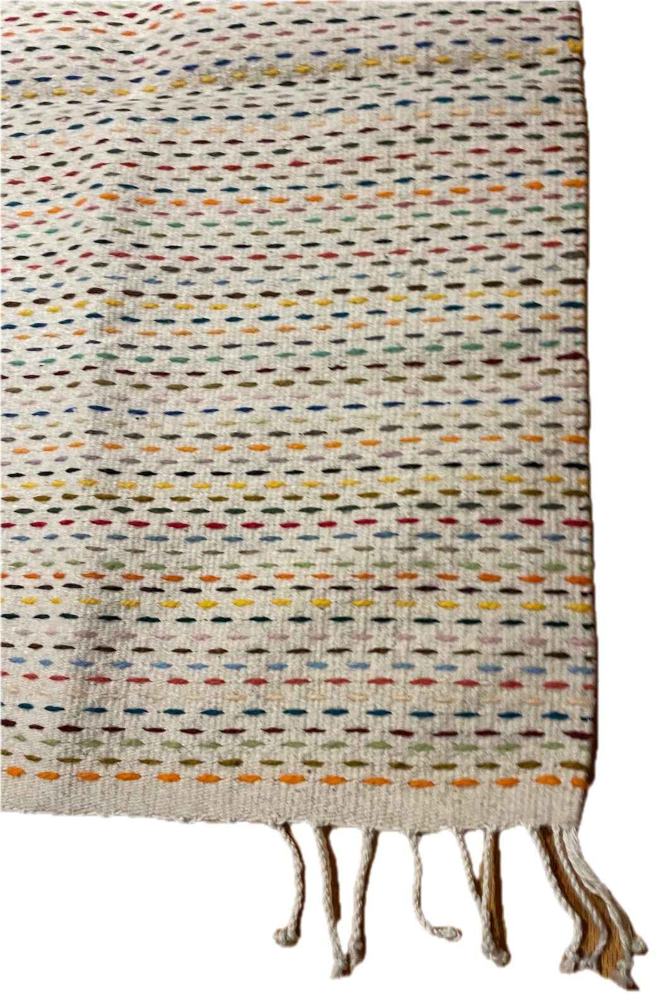
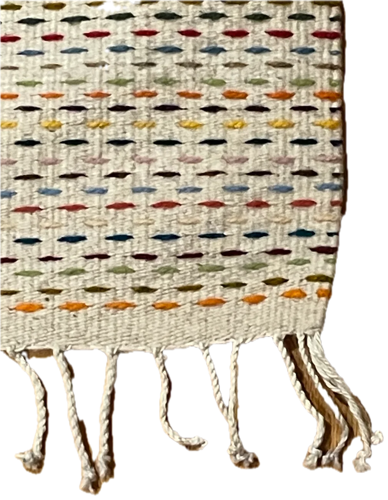
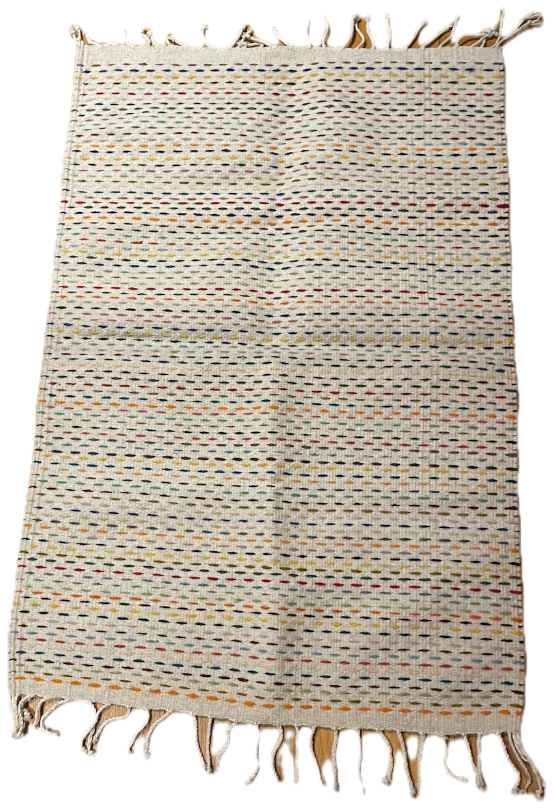
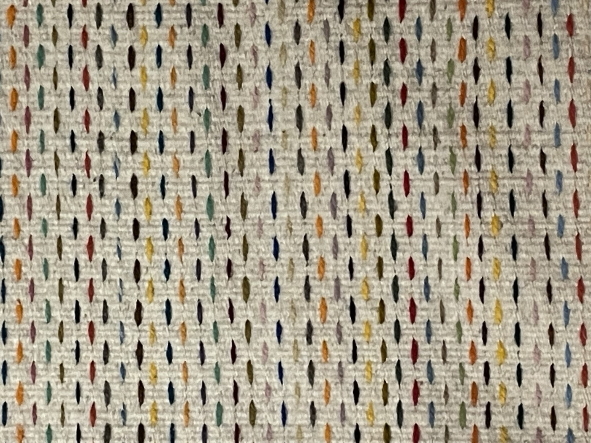
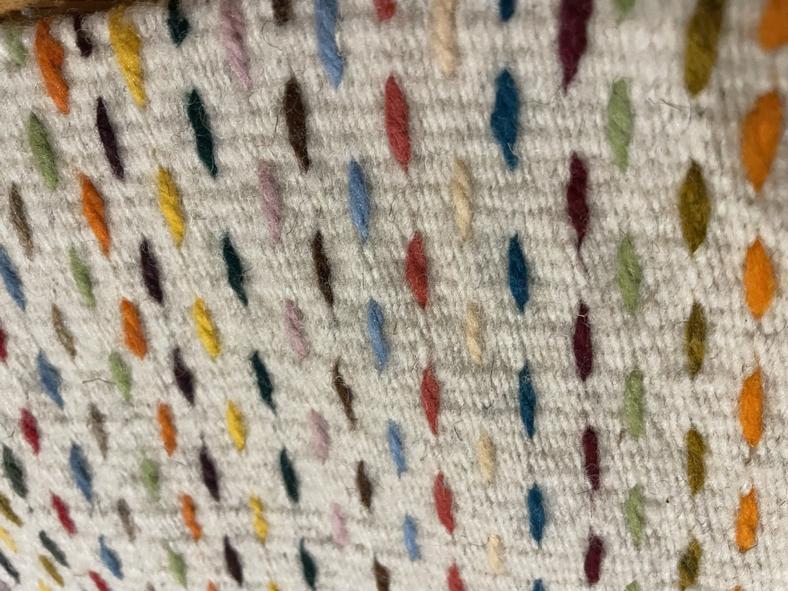
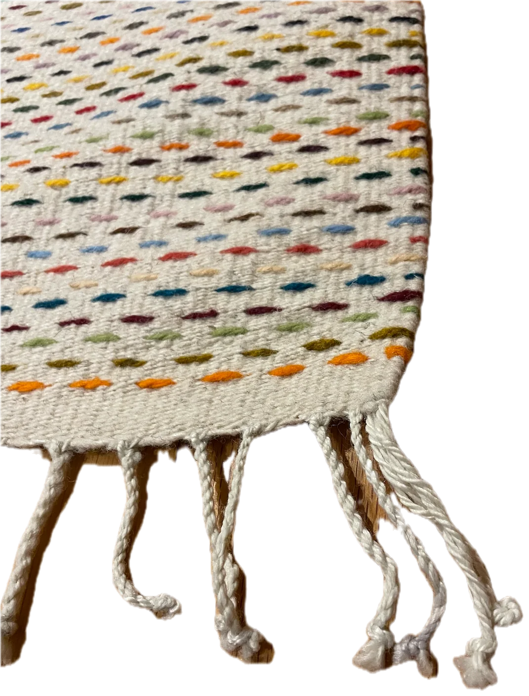
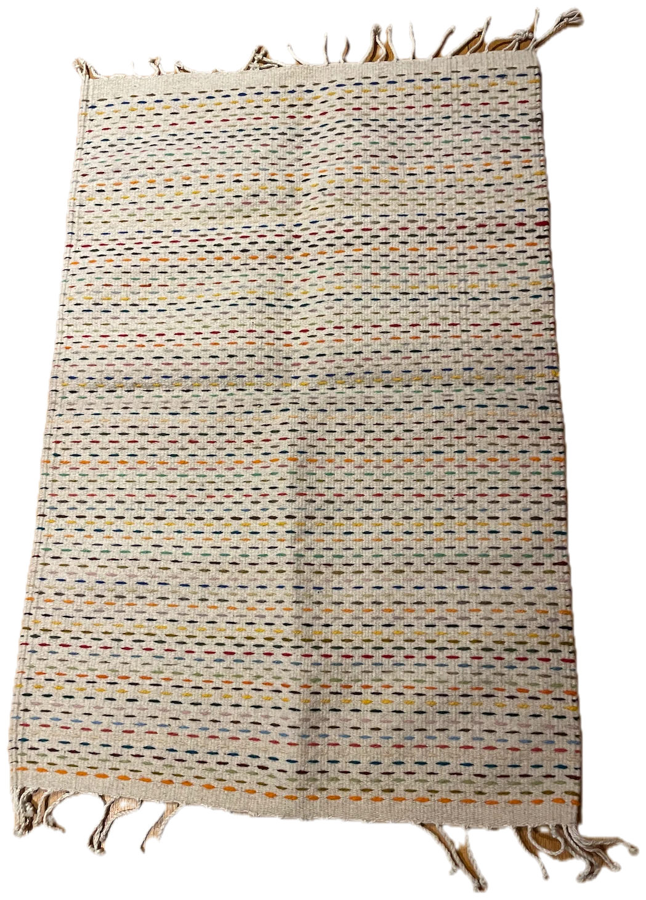

Handwoven in Teotitlán del Valle, Oaxaca · 100% wool · Coloured with plants
Wool, plants, hands. Nothing else.





The rug
Milpa
A pale ground of hand-spun wool, sown with rows of colour. Each dash is a short length of dyed weft laid in by hand. The fringe is the warp itself, twisted and knotted when the rug leaves the loom.
Made to order and woven for you: 3–5 weeks at the loom, plus about a week in transit. Ships worldwide, shipping included. If it isn't right, return it for a full refund.
- Material
- 100% wool, hand-spun
- Ground
- Undyed · natural ivory
- Dyes
- Plant & insect · no synthetics
- Weave
- Flat weave · pedal loom
- Fringe
- Twisted warp ends
- Origin
- Teotitlán del Valle, Oaxaca · one of one
Craft
Three ingredients, and three to five weeks.

Wool
Sheep raised in the high valleys, sheared once a year. The fleece is washed in river water, carded and spun by hand. It stays undyed: the ground of every rug is the colour the sheep grew.

Plants
Every dot of colour comes from a plant or an insect. Indigo for the blues, cochineal for the reds and pinks, marigold for the yellows. No two dye baths match, so no two rugs match.

Hands
Edgardo weaves every rug alone, on the pedal loom his grandfather taught him — four generations of the same craft. He's nineteen, and lays in each coloured weft by hand, twisting and knotting the warp into fringe when the rug comes off the loom. He also teaches Zapotec, the language the craft is passed down in, to the weavers coming up after him.
Colour
Every colour in it grew somewhere.
The dye pots are wood-fired and the recipes are older than the country. A shade shifts with the season the plant was picked and the water it was cooked in, which is why no two rugs are the same and why we don't try to make them so.
Añil Indigofera suffruticosa
Indigo. Every blue, from pale sky to near-black. Laid over marigold it gives the greens and teals.
Grana cochinilla Dactylopius coccus
Cochineal. A tiny insect that lives on the nopal cactus. Crushed it gives crimson; with lime, pink; with iron, plum.
Pericón Tagetes lucida
Mexican marigold. Yellows from butter to mustard, depending on how long the bath is left to sit.
Granada Punica granatum
Pomegranate rind. Olive and khaki; with a little iron, a soft grey-green.
Nogal Juglans
Walnut husk. Browns from tobacco to bark. It needs no mordant; the husk fixes itself.
Zacatlaxcalli Cuscuta
A golden vine that grows on other plants. Oranges and rust; over cochineal, brick red.
The name
Why milpa.
A milpa is the small Mexican field where corn, beans and squash are planted together, by hand, in rows. Seen from above it looks a lot like this rug: a pale ground, and colour in orderly, slightly imperfect lines.
We named the rug after it because it is made the same way. Slowly. In rows. By people who know exactly where everything in it came from.

It will outlive the floor it's on.
- Weekly
Shake it outside. Dust leaves wool easily.
- Vacuum
Suction only, no beater bar. The brush pulls at the wefts.
- Spills
Blot with cold water and a drop of wool soap. Never rub.
- Twice a year
Turn it around. Sun softens natural dye slowly, the way it softens everything.
- Never
Machine wash, tumble dry, or bleach.
From the loom to your floor.
- Order placed
You choose a size and reserve it. Nothing is pre-made and sitting in a warehouse — your rug starts on the loom after you order.
- Woven
Spinning, dyeing and weaving take 3–5 weeks, by hand, one rug at a time, on a single pedal loom.
- Finished
The warp is twisted into fringe, the rug is washed, and it's checked before it leaves the workshop.
- Packed
Rolled, not folded, in plastic-free wrapping with no branded box — less packaging, not more.
- In transit
About a week by tracked courier, door to door, anywhere in the world. Shipping is included in the price.
- Customs
If your country charges import duties, they're set by your government and billed by the courier on delivery — not by us.
Questions.
Do you ship worldwide?
Yes. Every rug ships door to door to any country, tracked from the workshop to your address.
Is shipping included in the price?
Yes — the price shown includes shipping. No freight charges added at checkout.
How long until it arrives?
Every rug is made to order: 3–5 weeks at the loom, then about a week in transit. Plan on roughly 4–6 weeks from order to arrival.
Will I owe customs or import duties?
Possibly, depending on your country. These are set by your government, not by us, and are collected by the courier on delivery.
What if it isn't right?
Ship it back to us internationally and we'll refund you in full — credited to your original payment method in under 14 business days. Each rug is one of one, so we offer a refund rather than an exchange — order again if you'd like a replacement.